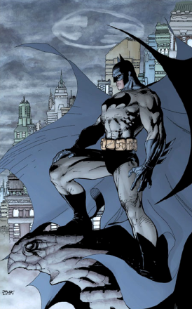

Batman
Created on 20.02.2020, Author: Admin
Bruce Wayne is the son of Dr. Thomas Wayne and his wife Martha. The boy grew up in a prosperous, respectable environment. But Bruce's happy childhood ended when a street robber, Joe Chill, shot him in front of his parents. Bruce had a hard time with their deaths, he swore that he would do everything possible and impossible to ensure that no one else experienced such horror. His biggest dream was to take revenge on the entire criminal world.
Bruce grew up and constantly amazed his guardians, Wayne's family friend Leslie Tompkins and butler Alfred, with his abilities in all disciplines: from math to sports. At the age of 18, Bruce began to travel around the world. In London he studied the search of the best detectives, in France pathoanatomy, in Japan he improved his fighting skills, in Germany he studied the intricacies of law. He also secretly studied martial arts in the League of Shadows, and his mentor was Ras al-Gul himself. Five years later, he was ready for his mission. Returning to his hometown of Gotham after a long absence, Bruce tried to realize his long-held dream of becoming a crime fighter.
Trailer
Superman
Created on 23.03.2020, Author: user
Superman is a superhero, a comic book character produced by DC Comics. Invented by Jerry Siegel and Joe Schuster and sold to Detective Comics (later DC Comics). The character first appeared in the pages of Action Comics # 1 (June 1938), and later in various radio programs, television programs, movies, newspaper columns, and video games. Superman is considered an icon of American culture, which reflects the idea of justice. With his success, the character helped to create a genre of superheroes and won the championship among other superheroes.
The original story tells that Superman is the last surviving inhabitant of the planet Krypton, who hit the baby on Earth. Feeding on the power of the Sun, brighter than the star of his home planet, he acquired superhuman abilities. With their help, Superman fights the evil that threatens the United States, Earth and the universe.
Trailer

Flash
Created on 27.02.2020, Author: Admin
The Flash (or simply Flash) is the name of several superheroes appearing in American comic books published by DC Comics. Created by writer Gardner Fox and artist Harry Lampert, the original Flash first appeared in Flash Comics #1 (cover date January 1940/release month November 1939).[1] Nicknamed the "Scarlet Speedster", all incarnations of the Flash possess "super speed", which includes the ability to run, move, and think extremely fast, use superhuman reflexes, and seemingly violate certain laws of physics.
Thus far, at least four different characters—each of whom somehow gained the power of "the speed force"—have assumed the mantle of the Flash in DC's history: college athlete Jay Garrick (1940–1951, 1961–2011, 2017–present), forensic scientist Barry Allen (1956–1985, 2008–present), Barry's nephew Wally West (1986–2011, 2016–present), and Barry's grandson Bart Allen (2006–2007). Each incarnation of the Flash has been a key member of at least one of DC's premier teams: the Justice Society of America, the Justice League, and the Teen Titans.
Trailer

Wonder Woman
Created on 03.04.2020, Author: Admin
Wonder Woman is a fictional superheroine appearing in American comic books published by DC Comics.[3] The character is a founding member of the Justice League. The character first appeared in All Star Comics#8 in October 1941[1] with her first feature in Sensation Comics #1 in January 1942. The Wonder Woman title has been published by DC Comics almost continuously except for a brief hiatus in 1986.[4] In her homeland, the island nation of Themyscira, her official title is Princess Diana of Themyscira. When blending into the society outside of her homeland, she sometimes adopts her civilian identity Diana Prince.[5]
Wonder Woman was created by the American psychologist and writer William Moulton Marston (pen name: Charles Moulton),[2] and artist Harry G. Peter. Marston's wife, Elizabeth, and their life partner, Olive Byrne,[6] are credited as being his inspiration for the character's appearance.[2][7][8][9][10] Marston's comics featured his ideas on DISC theory,[11] and the character drew a great deal of inspiration from early feminists, and especially from birth control pioneer Margaret Sanger; in particular, her piece "Woman and the New Race".
Trailer